Griffin Rutherford
Chief Technology Officer @ Coherascent Labs
Building Lune Synth and rigorous technology that connects people to solutions that actually work
About
I lead engineering at Coherascent Labs, where I've architected Lune Synth™, a 300k+ line production app built to give people honest, useful feedback instead of empty praise. What drives me is connecting people — to each other, and to technology rigorous enough to actually trust — rather than chasing flashy demos. B.S./M.S. in Computer Science from Colorado School of Mines, with hands-on depth in transformer architectures and autonomous agents. Outside of work, an avid outdoor recreationist with a deep interest in the intersection of mental and physical health.
Do the work. Scan it in. Get feedback that actually helps. Lune Synth helps learners from Pre-K through the PhD level turn handwritten work into clear, step-level guidance.
Students stay focused on thinking first, not wrestling with a prompt box. The product reads the work, finds where the reasoning broke, shows what to fix next, and turns corrections into targeted practice, streaks, and progress loops. It supports multimodal inputs—including handwriting, text, voice, and multiple-choice. While handwriting earns the most XP since it is most effective for learning, other inputs are supported for accessibility and quick, bite-sized sessions.
Also Building
Breakwater Operations · Co-Founder
A Santa Fe–based AI advisory practice co-founded with a former international CEO with 50 years of global operating experience — cutting through vendor hype with honest readiness reviews and implementation guardrails.
Malestrum: The Third Phase · Co-Host
A father-son podcast on the Third Phase — the civilizational shift AI is driving, and the personal one that follows career and family — explored across a 50-year age gap of Gen-Z and Boomer perspective.
Experience

Chief Technology Officer · Coherascent Labs
Jan 2026 - Present | Remote
• Architecting Lune Synth, a 300k+ line app connecting learners to feedback that actually helps them think, not just get answers
• Leading all technical strategy and day-to-day engineering execution for the company
• Holding the product to rigorous, well-tested standards — grounded in real AI research, but built to be trusted, not just demoed
• Building across Python, C++, PyTorch, AI CLI tools, and mobile phone emulation, drawing on hands-on experience with transformer architectures and autonomous agents
AI Implementation Engineer · TrueFlow AI LLC
Feb 2025 - Jan 2026 | Golden, Colorado, United States (Hybrid)
• Led all technical architecture for an AI automation startup as a 25% equity partner
• Shipped production code spanning frontend, backend, and integrations for a marketing automation platform
• Built custom agentic LLM automations and SQL-based RAG pipelines plugged directly into client workflows
• Stood up Docker-containerized infrastructure with CI/CD, wildcard SSL, and separate prod/staging environments
• Joined sales calls to provide technical depth and shape product direction
Cybersecurity Digital Innovation Internship · Jefferson County
Jun 2024 - Aug 2024 | Golden, Colorado, United States (On-site)
• Created training materials on cybersecurity and generative AI for technical and non-technical county employees
• Partnered with the CIO and CISO to define awareness metrics and deliver engaging, practical content
• Won "Best Booth" at the county Tech Showcase
Software Engineering Internship · CACI International Inc
May 2023 - Aug 2023
• Co-developed the Autocalibration Tool for EdgGuide, a Bluetooth mesh navigation system for blind and visually impaired users in public spaces
• Designed the full UML architecture of a C++ program from scratch using PlantUML, applying SOLID principles throughout
• Built position-solving algorithms (hill climb, gradient descent) to determine absolute XYZ coordinates of Bluetooth beacons from signal distance data
• Reduced installation costs by eliminating the need for manual beacon-to-beacon measurement across large commercial spaces
• Applied multivariable calculus and probability/statistics concepts to the core positioning logic
More about me
Life of Adventure
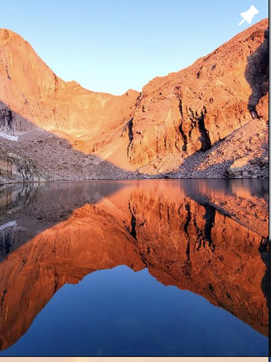
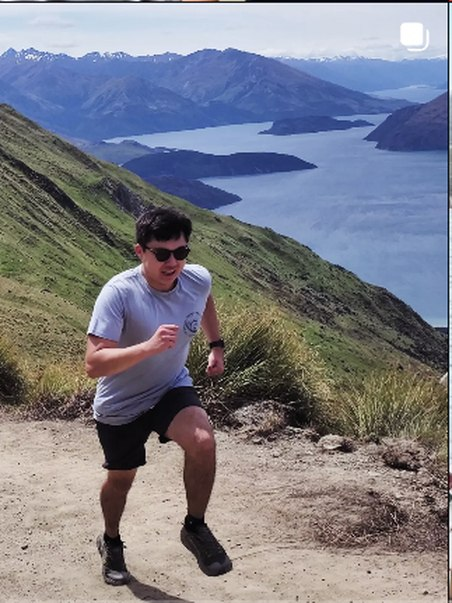
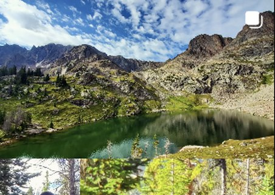
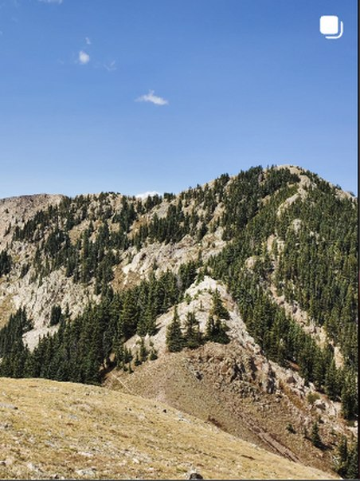
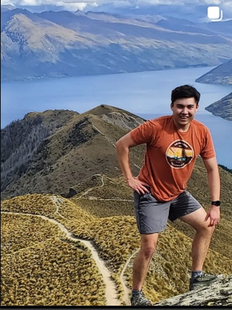
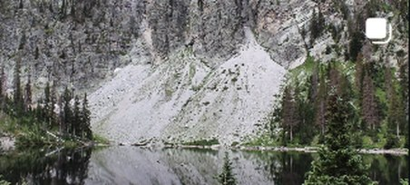
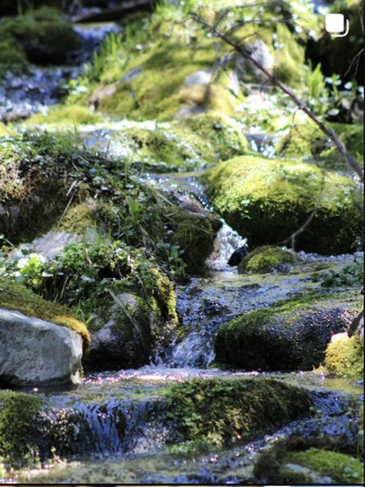
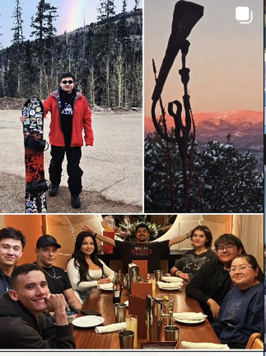
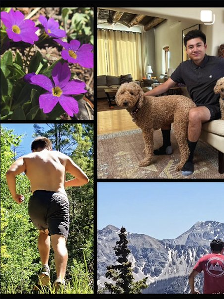
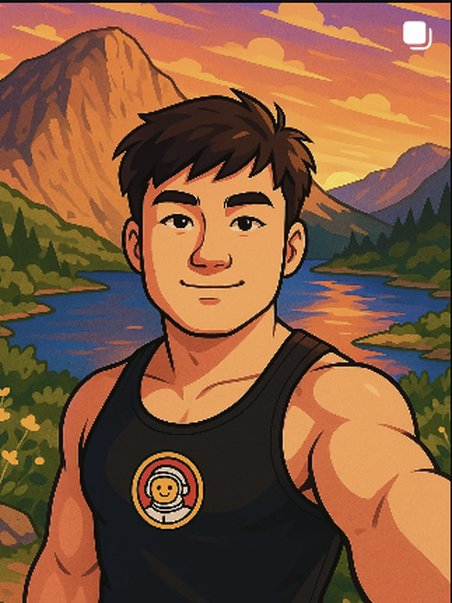
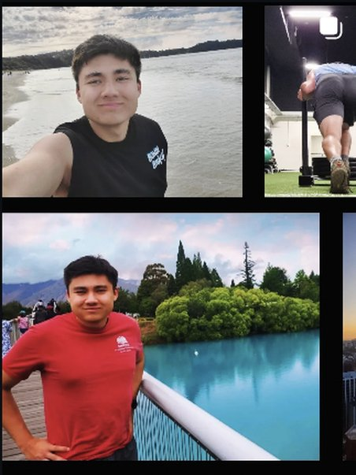
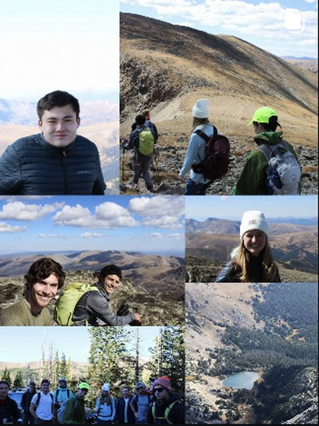
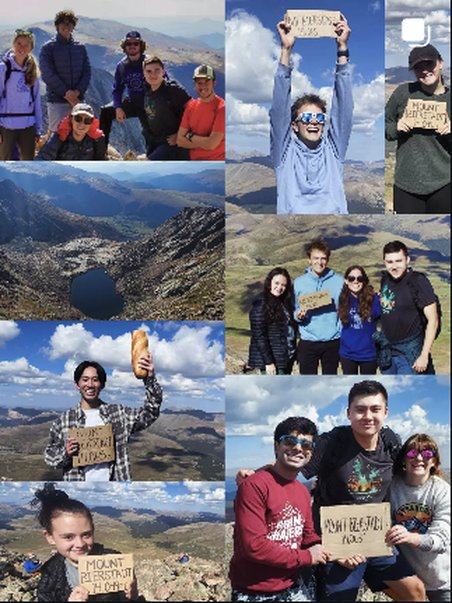
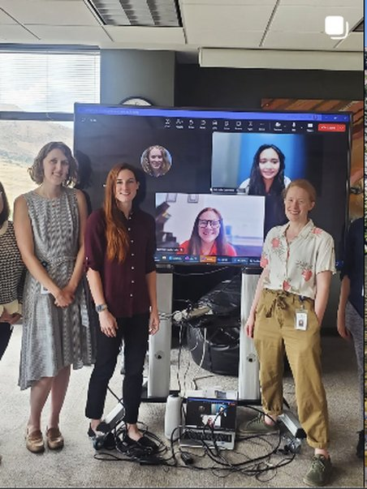
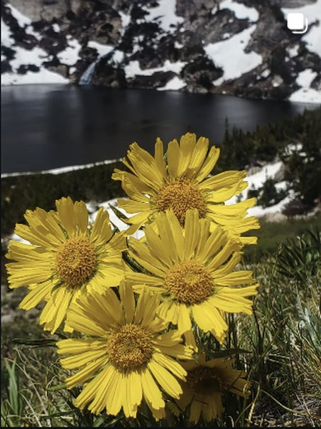
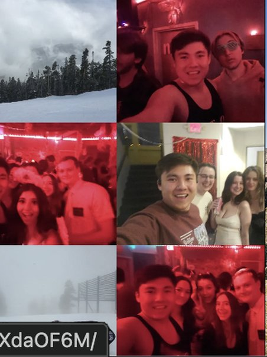
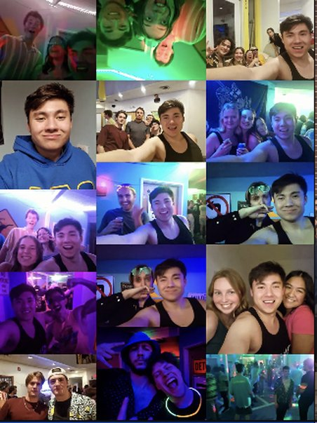
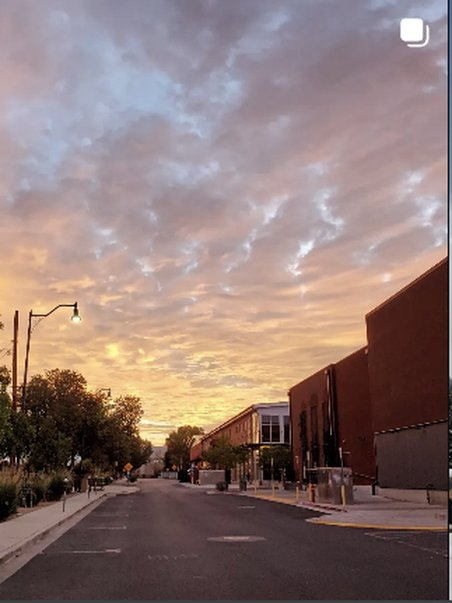
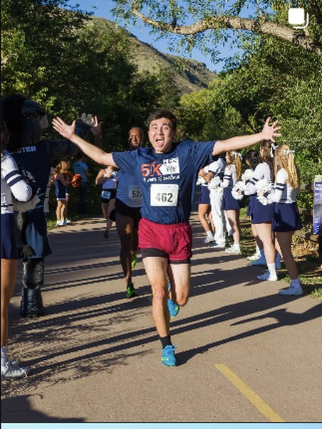
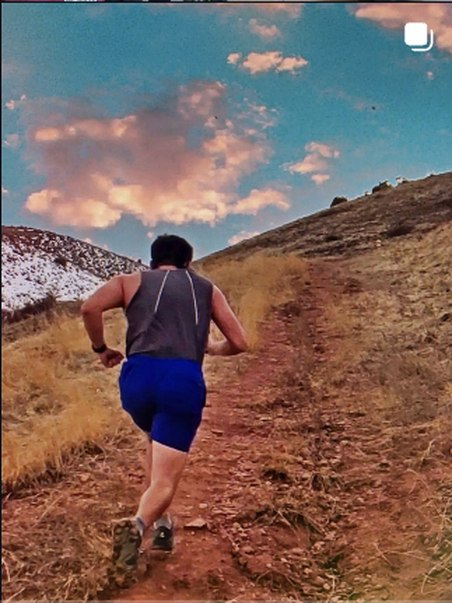
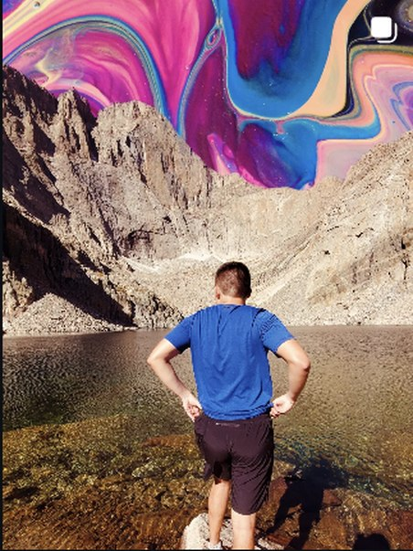
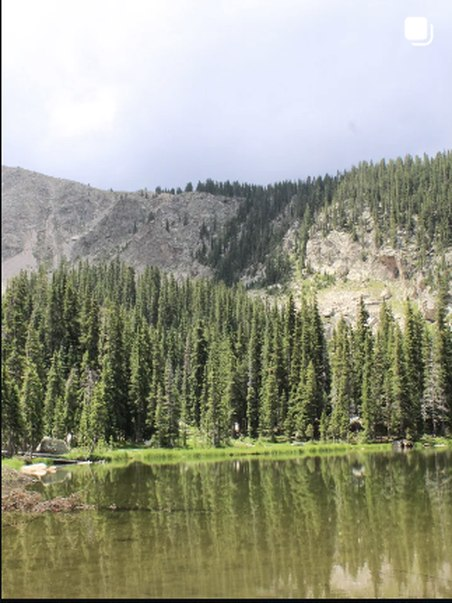
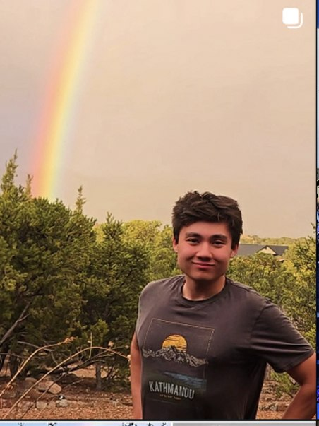
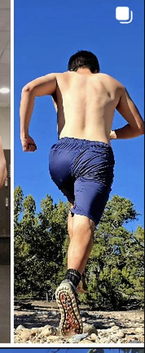
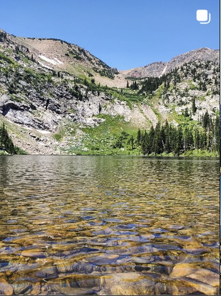
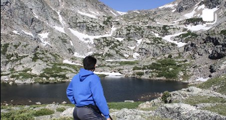
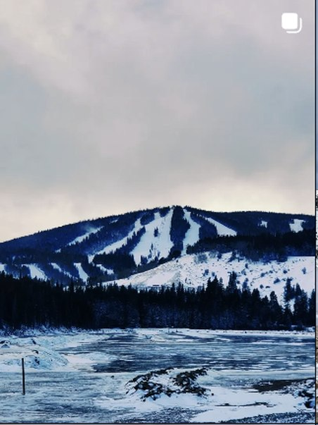
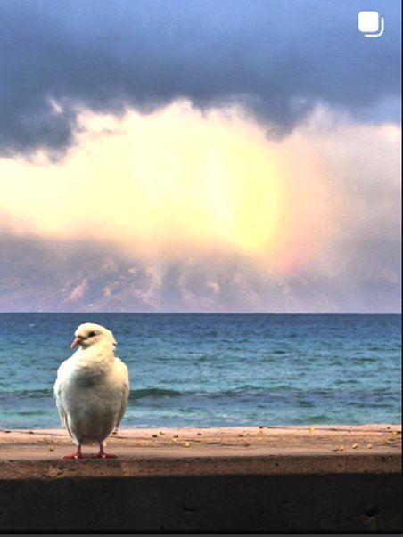
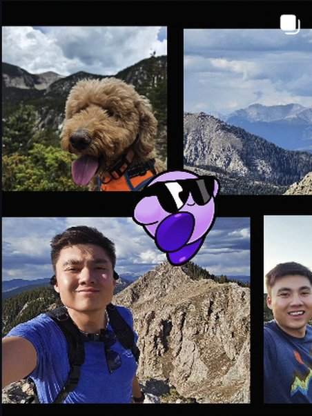
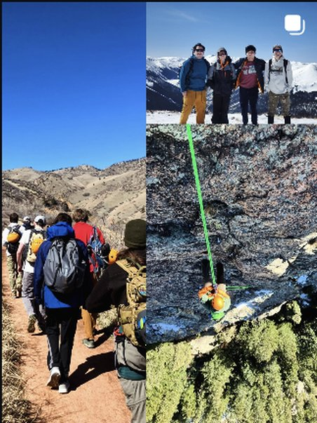
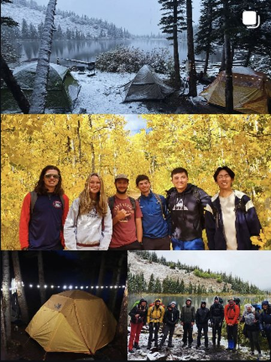
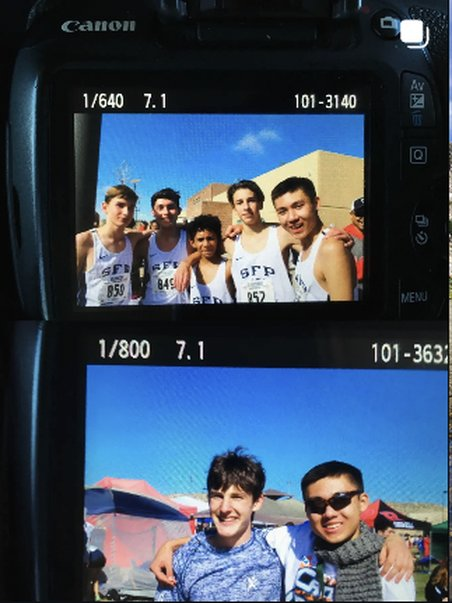
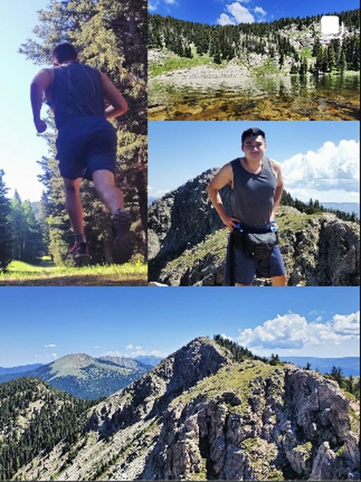
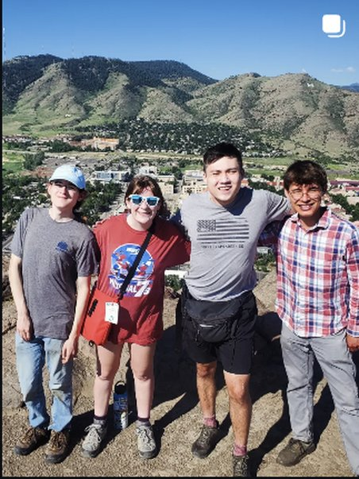
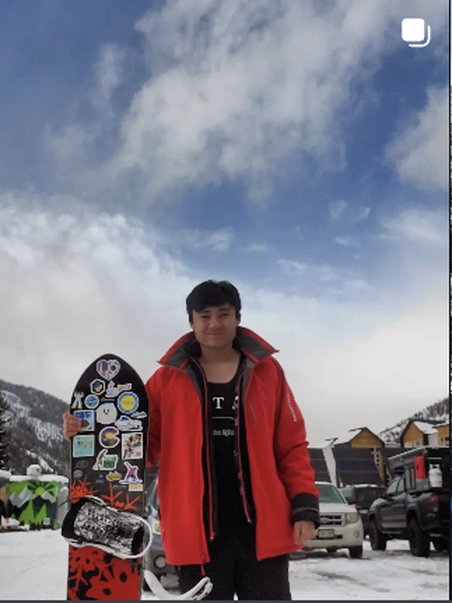
Where to?
See more from the road, or browse the general photography collection.
Labs (R&D and live demos)

Stochastic Gradient Descent Made Fun
Jan 2026 - Present | Independent passion project
Designing a playful, visual lesson plan that uses Algebra II and AP Calculus ideas to make the math behind machine learning, ChatGPT, and AI intuitive far earlier than students usually encounter it.
Mathematical Simulations
Aug 2025 - Apr 2026 | Colorado School of Mines
Interactive explorations of fluid dynamics (Navier-Stokes) and probability theory (Gambler's Ruin). Real-time visualizations demonstrating chaos theory, stochastic processes, and computational physics with WebGL acceleration.
Transformer Architecture from Scratch
Feb 2025 - Apr 2025 | Colorado School of Mines
A collaborative implementation of the fundamental structure of LLMs like ChatGPT built entirely from scratch, featuring attention mechanisms, RMSNorm, positional embeddings, and a generation method trained on Gutenberg texts for MATH598B at Colorado School of Mines. My other collaborators are Alex Fruge, Gabriel Del Castillo, and Matthew Stanley.
AlmndBrd: Enhanced Mandelbrot Explorer
Dec 2021 - Feb 2025 | Colorado School of Mines
A WebGL-accelerated Mandelbrot set explorer featuring real-time rendering, 8 color themes, smooth animations, and high-performance GPU computation for infinite fractal exploration.
SATPLAN Solver
Oct 2024 - Dec 2024 | Colorado School of Mines
A Lisp implementation encoding complex problems like the Tower of Hanoi into CNF (Conjunctive Normal Form) with thousands of logical propositions, using DPLL-based SAT solving to demonstrate practical applications in AI planning.
Education
Colorado School of Mines
Bachelor and Master of Science, Computer Science
2020 - 2025
Emphasis on Artificial Intelligence, Data Science, and Machine Learning. Completed both degrees simultaneously.
Skills: Communication · Machine Learning · Object-Oriented Programming (OOP)
Santa Fe Preparatory School
High School Diploma
2015 - 2020
Activities: Cross Country and Track Captain; Musical Theater (Roles in "Curtains" and "In The Heights")
Community
Santa Fe Striders
Member · Jun 2026 - Present
An inclusive, volunteer-led running club founded in 1978 that promotes healthy living throughout Northern New Mexico through weekly group runs, community events, and races that support scholarships and local nonprofits.

Santa Fe Builders
Member · May 2026 - Present
A Santa Fe community for coders, builders, and tech-curious creators who want to make things, share support, and connect with like-minded people in the local tech scene.
Toastmasters International
Active Member · Mar 2025 - Jun 2025
A global community dedicated to empowering individuals through public speaking, leadership, and effective communication. Recognized worldwide since 1924, I hone my skills in delivering impactful presentations and fostering meaningful connections. As an active member, I engage in dynamic workshops, speech contests, and mentorship opportunities—sharpening my voice while inspiring others to find theirs!
Mines Alpine Club
Vice President and Director of Hiking and Trail Running · Aug 2023 - May 2025
An official club uniting diverse outdoorsy interests like hiking, climbing, skiing, mountaineering, and snowboarding. Recognized by Colorado School of Mines in 2024, I share my passion for rugged trails and thrilling slopes. Also involved in a heavy weightlifting group I met through the club to pursue my hobbyist bodybuilding goals!
Alpha Tau Omega Fraternity
Philanthropy Chair, Alumnus · Jan 2022 - May 2024
A tight-knit fraternity fostering academic and social excellence. As Philanthropy Chair, I organized collaborative volunteer initiatives—from blood drives to Habitat for Humanity trips—to support community causes.
Ballroom Dance Club (Swing Dance)
Aug 2023 - Dec 2023
Engaged in swing dance lessons and choreography practices, embracing creative movement and vibrant social interaction.
Adventure Mountain Running Club
Founder · May 2021 - May 2022
Established a mountain running group for 13er and 14er trails, celebrating endurance and camaraderie—now merged into the Running Club.